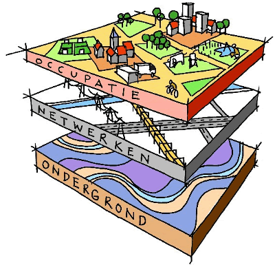

De toepassingslaag is de bovenste laag van een computer- of softwaresysteem en omvat alle softwaretoepassingen die gebruikers rechtstreeks gebruiken. Deze laag biedt specifieke functionaliteiten en diensten die zijn ontworpen om aan de behoeften van gebruikers te voldoen. Voorbeelden van toepassingen zijn mobiele apps, webapps en desktopsoftware.
Apps zijn de programma's die we op onze apparaten installeren of in de browser gebruiken om taken uit te voeren, zoals sociale media, e-mail, gaming en productiviteit. Ze zijn vaak gebruiksvriendelijk en gericht op een specifieke functie, waardoor gebruikers eenvoudig toegang hebben tot de benodigde tools en informatie.
API's (Application Programming Interfaces) spelen een belangrijke rol in deze laag door de communicatie tussen verschillende softwaretoepassingen mogelijk te maken. Ze stellen ontwikkelaars in staat om functies van andere programma's of diensten in hun eigen apps te integreren. Bijvoorbeeld, een weerapp kan een API gebruiken om actuele weersinformatie van een externe dienst op te halen, terwijl een e-commerce-app API's kan gebruiken om betalingsverwerking of verzending te regelen.
